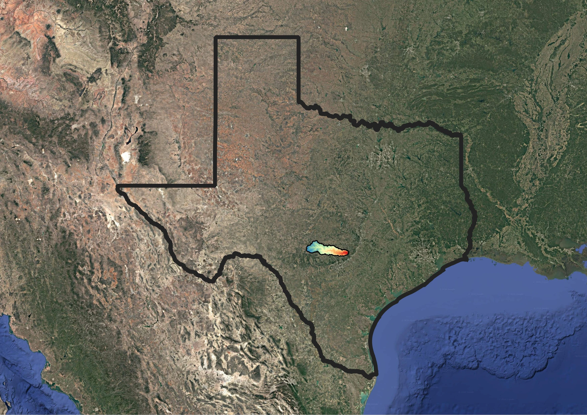
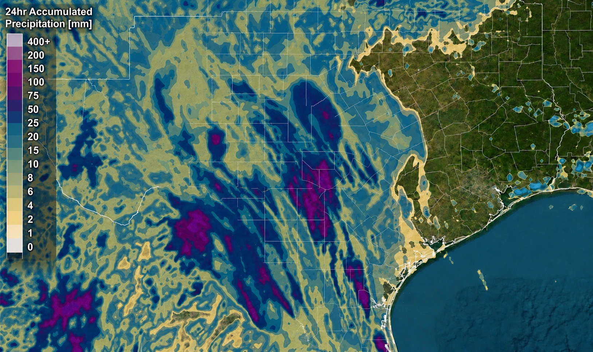
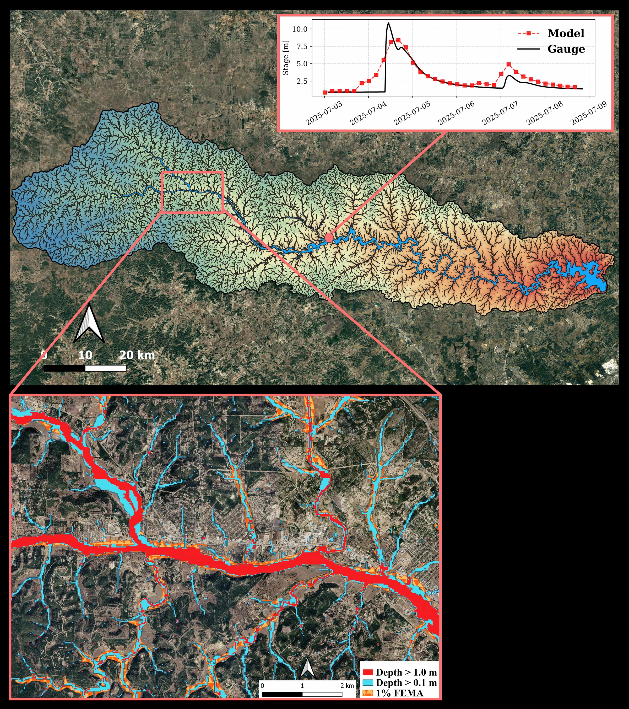
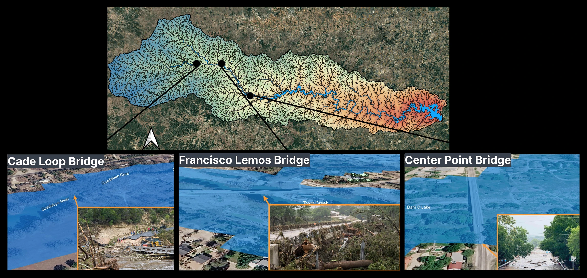

Building Community-Scale Flood Intelligence
Flooding is one of the most damaging natural hazards worldwide, threatening lives, infrastructure, transportation networks and local economies. In Central Texas, the Guadalupe River watershed has seen repeated devastating floods, driven by steep terrain, fast-responding tributaries and increasingly intense rainfall.
RUCEEE LAB is developing practical flood intelligence for communities across Kerr County, the Texas Hill Country and the wider Guadalupe River watershed. We combine physics-based hydrodynamic modeling with high-resolution geospatial data to deliver reliable flood hazard information for engineering design, emergency planning and long-term community resilience.
Figure 1 shows the location of the Guadalupe River watershed within the State of Texas.

What the Framework Delivers
We have developed a high-resolution, physics-based flood modeling framework that simulates both pluvial flooding (from intense rainfall) and fluvial flooding (from river overflow). It generates flood hazard products across a wide range of rainfall scenarios, return periods and future climate projections, giving communities, engineers, planners, emergency managers and decision makers information they can act on.
For communities across the Guadalupe watershed, the framework is designed to provide:
- High-resolution pluvial and fluvial flood inundation maps.
- Flood hazard maps for multiple rainfall return periods.
- Flood hazard maps for different river flood return periods.
- Future flood hazard assessments under projected climate change scenarios.
- Identification of vulnerable streets, roads, bridges, and critical transportation infrastructure.
- Identification of flood-prone residential, commercial, and public properties.
- Infrastructure exposure and vulnerability assessments.
- Decision-support products for emergency response and evacuation planning.
- Scientific information supporting resilient infrastructure design.
- Engineering products for floodplain management, insurance risk assessment, and long-term community planning.
Case Study: July 2025 Guadalupe River Flood
To validate the framework, we modeled the devastating July 2025 Guadalupe River flood. Exceptionally intense rainfall caused rapid river rises, widespread inundation and severe damage across the watershed. More than one hundred lives were lost, and many roads, bridges and communities were catastrophically flooded.

Figure 3 shows simulated inundation depths at several thresholds alongside observed river stage from a USGS stream gauge. Flooded areas extend well beyond existing FEMA flood hazard maps, which shows the value of high-resolution, event-based hydrodynamic modeling for community-scale flood assessment.

Infrastructure Impact Assessment
Beyond flood extent, the framework lets us assess impacts on critical infrastructure.
Figure 4 highlights several bridges affected during the July 2025 flood, illustrating how high-resolution flood simulations can identify vulnerable transportation assets and support infrastructure resilience studies. Similar analyses cover roads, residential neighborhoods, public facilities, utilities, and other critical infrastructure throughout the watershed.

Looking Ahead
RUCEEE LAB is committed to advancing next-generation flood intelligence for communities throughout Central Texas. By integrating physics-based hydrodynamic models, high-resolution terrain data, geospatial analysis and future climate projections, we aim to deliver actionable flood hazard products that improve preparedness, reduce infrastructure vulnerability and support resilient community development.